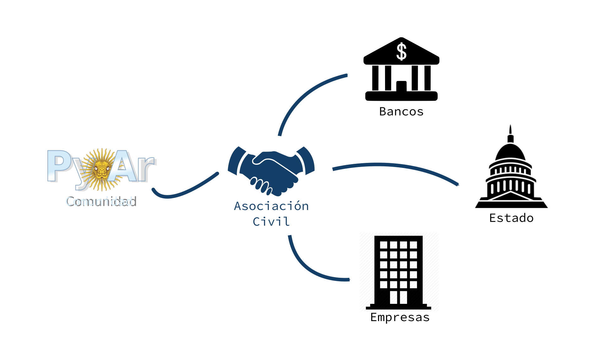

http://bit.ly/pyar-pyconar2018
Fundación
19/02/2016 14 miembros 17/05/2017 (15 meses después...) +papeles
Socies
- 2016: 14 miembros
- 2017: 55 miembros (+41)
- 2018: 154 miembros (+99)
Categorias
- Activo: 57 miembros (Voz, Voto, CD) $200/mes
- Adherente: 63 miembros (Voz) $75/mes
- Estudiante: 14 miembros (c/certificado) $25/mes
- Cadete: 3 miembros (<18 años)
- Colaborador: 17 miembros ()
- Benefactor Platino: 1 miembro (Empresa)
Actividades
Meetups
- 2017: 2
- Abr/17: @ Digital House + Total
- Ago/17: @ Onapsis
- 2018: 6 (
300%) - Abr/18: @ Devecoop
- May/18: @ A3 + GDG Women Techmaker RDP
- Jul/18: @ Onapsis
- Ago/18: @ Jampp
- Sep/18: @ Belatrix
- Oct/18: @ Globant
PyCamp
- 2017: 40 participantes (22.5% )
- 2018: 44 participantes (25% +10% )
PyDays 2018
- La Plata
- NEA
- Rosario
Herramienta/Interfaz
Te necesitamos

https://ac.python.org.ar/
presidencia@ac.python.org.ar
http://bit.ly/socio-pyar